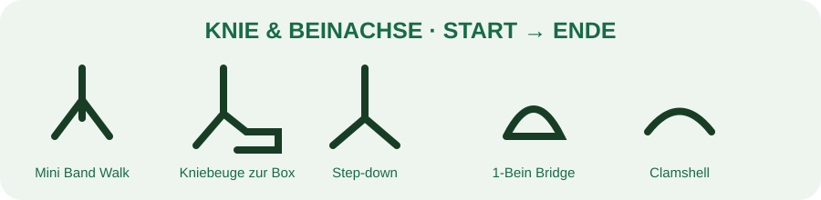

← TrainingsbibliothekKnie & Beinachse
15–20 Minuten · 2–3 Runden · Stabilität & Kontrolle

1. Mini Band Walk
30–45 Sek. · Pause 20 Sek.
2. Einbeinige Kniebeuge zur Box
8–10 je Bein · Pause 30 Sek.
START: stabiler Einbeinstand. ENDE: kontrolliert zur Box absenken. Knie bleibt über dem Fuß.
3. Step-down
8–10 je Bein · Pause 30 Sek.
4. Glute Bridge Single Leg
10–12 je Seite · Pause 30 Sek.
5. Clamshell
12–15 je Seite · Pause 20 Sek.
2–3 Runden · Qualität vor Geschwindigkeit.